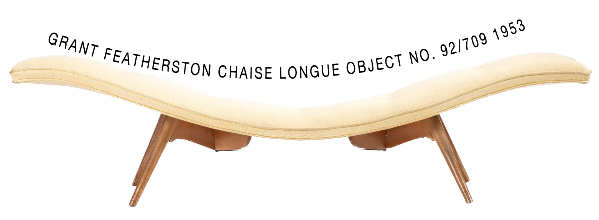

'RS161' Settee by Grant Featherston
For my project, I aim to share the history and collection of Grant Featherston's work, an Australian furniture designer whose chair designs became iconic during the Atomic Age in the 1950s. Following his success, Grant was awarded the title of Design Institute of Australia Hall of Fame among many other awards for his collections at national and state museums and galleries. I chose this topic due to its ability to be experimental and explore creative ways to display the information pertaining to Grant Featherston’s work.
Grant Featherston Chaise longue
One of the new wave of Australian designers to emerge in the immediate post-war years, Grant Featherston (1922-1995) designed his first chair in 1947. In the early 1950s he developed the now famous 'Contour' range of chairs. First launched in 1951, the 'Contour' was an immediate success, its innovative plywood shell formed using a process that Featherston developed himself in the absence of suitable plywood bending technology locally. In 1957 Featherston was appointed consultant designer to Aristoc Industries, a Melbourne manufacturer of metal furniture. This highly fruitful collaboration resulted in the production of a variety of chairs including the 'Mitzi' (1957), 'Scape' (1960), the 'Expo 67 talking chair' and the 'Stem' chair of 1969.
